Peints à la main, un par un, depuis 1824.
Carreaux de faïence murale décorés au pinceau à Ponchon, dans l'Oise, à une heure de Paris. Plus de 100 motifs, 30 couleurs, à vos mesures.
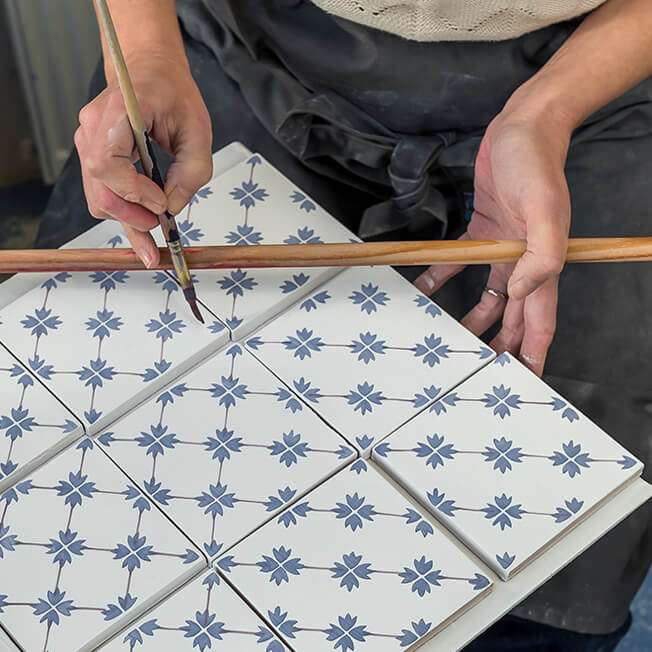
Un carreau.
10,8 cm de faïence rosée, un émail stannifère blanc, un motif peint à la main. Ici, la Rose des vents.
Quatre, et le motif s'ouvre.
Tourné d'un quart à chaque fois, le carreau dessine une rosace qu'aucun ne contient seul.
Seize : c'est un tapis.
Le décor « en tapis » est l'ancêtre du carreau de ciment. On le pose derrière un piano de cuisson ou au fond d'une cheminée.
Un mur : le vôtre.
Choisissez le motif, ses couleurs, l'émail et le format. L'atelier fabrique sur commande.
Composer mon murQuatre choix, un carreau unique.
Tout se décide avec vous, à l'atelier ou à distance.
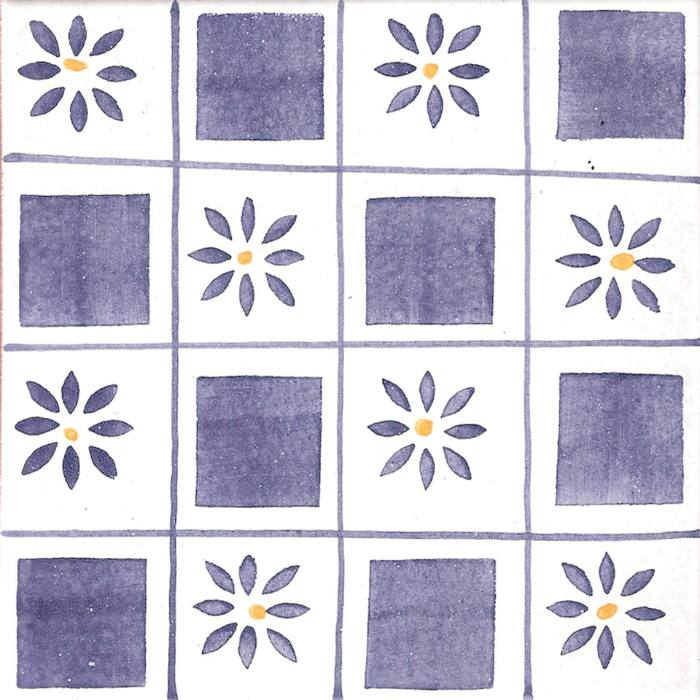
Le motif
Floraux, géométriques, centraux, frises ou en tapis : plus de 100 dessins tirés des catalogues du XIXᵉ siècle.
Voir les motifs →La couleur
Le bleu de cobalt, ou l'une des 30 couleurs du nuancier. Chaque couleur d'un motif polychrome se choisit.
Ouvrir le nuancier →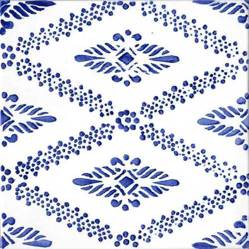
L'émail
Blanc craie, blanc antique aux nuances d'autrefois, ou ivoire, plus chaud.
Comparer les émaux →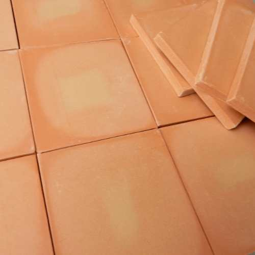
Le format
10,8 cm, le format d'origine des motifs, ou 13 cm pour les grandes surfaces. D'autres sur demande.
Choisir le format →Pour quelle pièce ?
Toutes les réalisations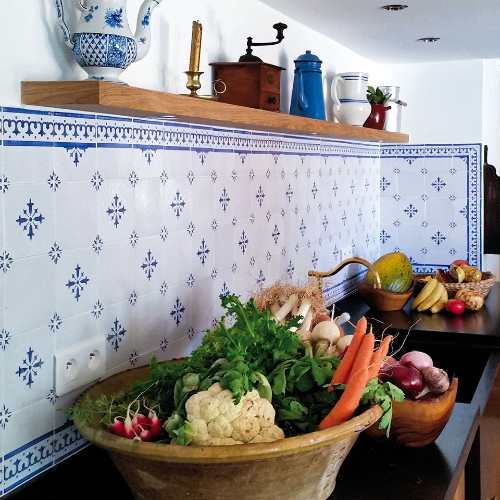
CuisineCrédence, plan de travail, piano de cuisson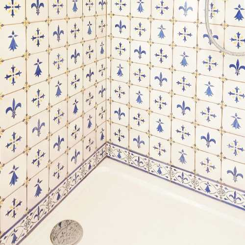
Salle de bainDouche, lavabo, murs jusqu'au plafond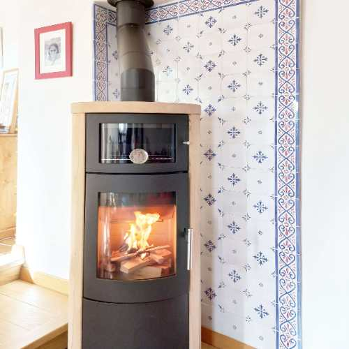
Poêle et cheminéeLa faïence supporte la chaleur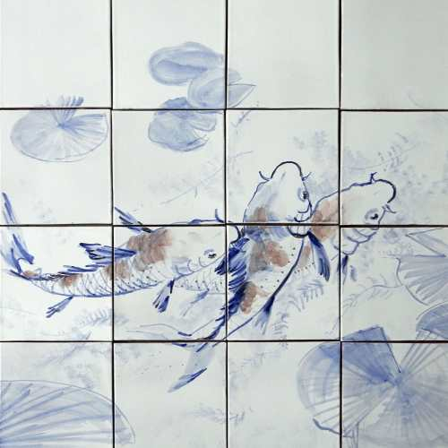
FresquesPanneaux peints sur mesure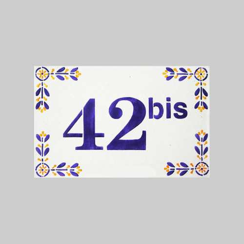
FaçadeNuméros, linteaux, signalétique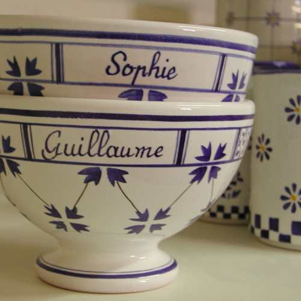
Vaisselle et mobilierBols prénom, pichets, tablesChez Monet, chez Zola, chez Renoir.
Les carreaux des manufactures de Ponchon habillent des Maisons des Illustres et des monuments historiques. L'atelier les réédite à l'identique.
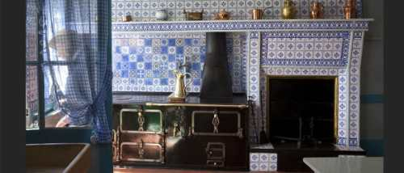
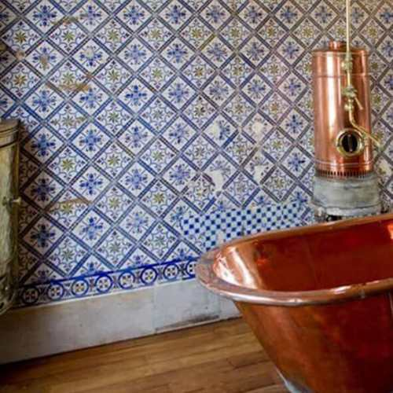
MédanSalle de bain d'Émile Zola · Rose des vents, frise F8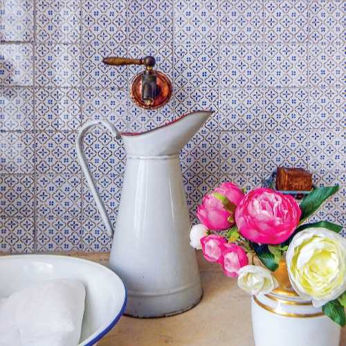
EssoyesCuisine de Pierre-Auguste Renoir · M49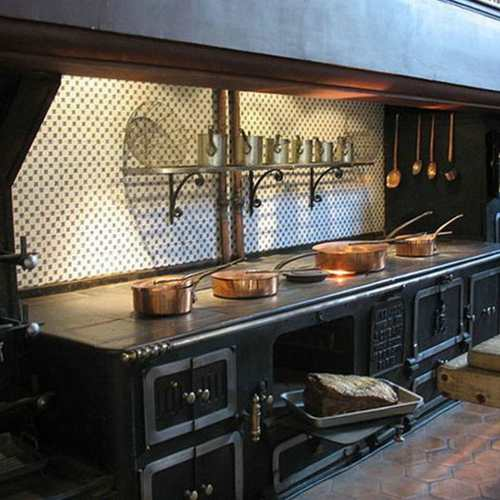
Vaux-le-VicomteChâteau · motif M2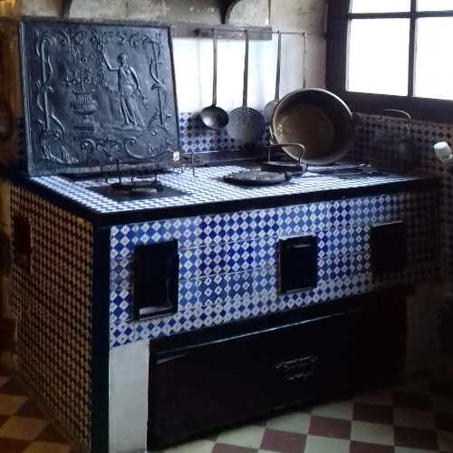
CreilMusée Gallé-Juillet · M11
Deux siècles de faïence à Ponchon
Rouge griotte, du nuancier PonchonEntrez dans l'atelier.
Mise en forme, émaillage, décor au pinceau, cuisson à 980 °C : chaque carreau passe entre les mains de l'équipe de Caroline Sobczak.
Vous pouvez venir voir et manipuler les échantillons, sur rendez-vous, dans la salle d'exposition attenante à la manufacture.
Prendre rendez-vous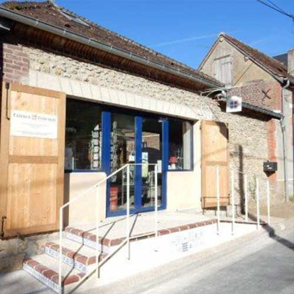
Particuliers
Une cuisine, une salle de bain, un poêle : on vous aide à choisir, échantillons en main.
- Un interlocuteur unique pour votre projet
- Premier échantillon offert
- 2 à 4 semaines de fabrication pour une commande moyenne
- Retrait gratuit à la manufacture
Professionnels
Architectes, décorateurs, restaurateurs du bâti ancien : vos créations, nos carreaux.
- Recherches de couleurs d'après carreau ancien
- Champs émaillés, frises et listels à vos mesures
- Livraison sur chantier en France et en Europe
- Showroom ouvert à vos clients
Vente en direct de la manufacture. Un interlocuteur unique suit votre commande, acompte de 50 % et solde à réception, retrait à l'atelier ou livraison sur rendez-vous en France et en Europe.
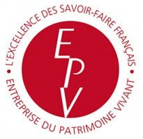
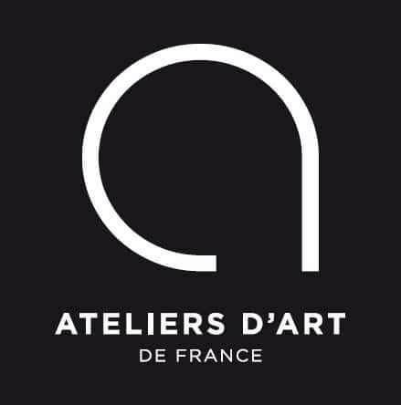
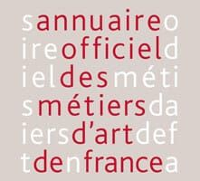
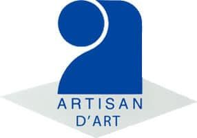
Les motifs
Plus de 100 motifs répertoriés, deux formats, un nuancier riche. Touchez un carreau pour voir son prix et l'ajouter à votre sélection.
Le numéro de catégorie (Cat. 1 à 8) donne le prix : plus le décor est riche, plus la catégorie est haute.
Associations posées
Motifs, frises et angles se marient. Quelques compositions réalisées à l'atelier.
Tarif 2025
Prix en euros HT par carreau, à la sortie de l'atelier. Tarifs au 1ᵉʳ janvier 2025, TVA 20 %.
Expédition par transporteur : participation forfaitaire de 25 € TTC aux frais de palettisation ; acheminement en sus, selon la destination.
Acompte de 50 % à la commande, solde à réception. Commandes de moins de 500 € HT et export : paiement intégral à la commande.
Les dimensions et échantillons de teinte sont indicatifs : de légères nuances, propres au travail à la main, sont gage d'authenticité.
Fabrication sur commande : 2 à 6 semaines ouvrées en moyenne.
Le nuancier
Un motif monochrome, bicolore ou polychrome : vous choisissez chaque couleur, et la couleur du fond. Voici des exemples réalisés à l'atelier.
Trois émaux de fond
Le même motif M22, sur les trois fonds. Sans précision de votre part, l'atelier émaille en blanc.
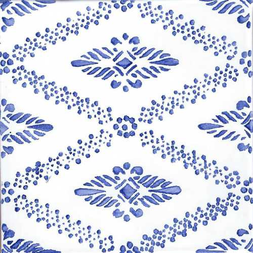
Blanc
- proche de la craie, légèrement gris
- ambiance moderne, polyvalent
- lisse et brillant
Blanc antique
- le plus proche des carreaux du XIXᵉ siècle
- nuances d'un carreau à l'autre
- idéal pour les grandes surfaces et les mélanges
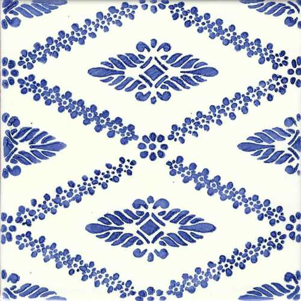
Ivoire
- proche de la pierre de carrière
- chaleureux, esprit campagne ou « shabby »
- parfait avec le rouge, le bordeaux, la tomette
Il existe aussi un blanc cassé, entre le blanc et l'ivoire.
Choisir sa couleur
Le bleu de cobalt sur fond blanc reste la référence des carreaux anciens. Les teintes naturelles s'accordent au bois et à la pierre ; les teintes foncées structurent l'espace ; les teintes vives réveillent une pièce.
Une couleur foncée rétrécit visuellement une surface, une couleur claire l'agrandit. Pensez à l'existant : l'atelier peut s'approcher d'un échantillon que vous apportez, ou développer une couleur d'après celui d'un architecte.
Composer mon murComposer mon mur
Choisissez un motif, une pose, un émail et votre surface. Le mur se pose sous vos yeux, avec une estimation d'après le tarif de l'atelier.
Estimation indicative d'après le tarif au 1ᵉʳ janvier 2025, hors transport. Le devis définitif est établi par l'atelier.
Réalisations
Crédences, douches, poêles, fresques, vaisselle : la faïence murale a mille usages.
Boutique
Carreaux en stock, lots déstockés et vaisselle peinte main. Frais de port compris en France métropolitaine.
Pièces artisanales : couleurs et fond peuvent varier légèrement d'un carreau à l'autre. Lots ni repris ni échangés.
Deux siècles de faïence à Ponchon
Entre la Normandie et le bassin parisien, près de Beauvais, Ponchon tient une place à part dans l'histoire de la faïence française.
La première fabrique naît en 1820, la dernière ferme en 1920 : cent ans pendant lesquels huit usines se succèdent. L'arrivée de l'eau sur les éviers et les immeubles haussmanniens font prospérer les carreaux de Ponchon.
En 1991, Sylvie Thémereau ressuscite le décor de faïence à Ponchon. Elle transmet son savoir-faire à Caroline Sobczak, qui le perpétue aujourd'hui.
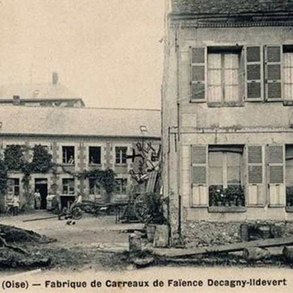
Les Maisons des Illustres
Ce label signale les lieux qui gardent la mémoire de femmes et d'hommes qui ont marqué l'histoire de France. Les carreaux des manufactures de Ponchon du XIXᵉ siècle en habillent plusieurs.
On les retrouve aussi jusqu'en Uruguay, au Museo del azulejo.
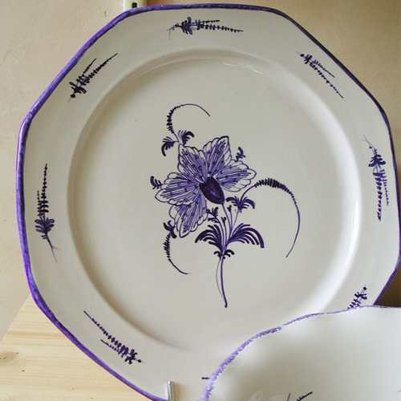
Rééditer vos carreaux anciens
L'atelier mène un vrai travail de recherche de couleurs pour reproduire les carreaux anciens : faïence de Desvres, Martres-Tolosane, Delft, Rouen…
Pour des raisons écologiques ou historiques, vos carreaux disparus peuvent revenir au mur.
Envoyer une photo de votre carreauPetite histoire du carreau de faïence
Le carrelage pave sols et murs depuis l'Antiquité. Au IXᵉ siècle, la technique de la faïence est maîtrisée en Irak ; le mot, lui, vient de Faenza, en Italie.
Sous l'influence des porcelaines chinoises importées par la Compagnie néerlandaise des Indes orientales, le goût du bleu et blanc s'impose en Europe. Les carreaux de Delft, d'environ 13 cm, portent souvent quatre motifs d'angle autour d'un décor central.
En France, la dynastie Leclerc produit des carreaux à Martres-Tolosane dès le début du XIXᵉ siècle. Mais les grands volumes viennent du Beauvaisis et du Pas-de-Calais : Desvres, Ponchon, Aubagne.
Une terre de céramique : le Pays de Bray
Entre Dieppe et Beauvais, des soulèvements géologiques ont fait affleurer sables, argiles et calcaires. Les potiers s'y installent dès le Iᵉʳ siècle ; le grès, « terre de Beauvais », connaît son essor au XIXᵉ, puis vient le temps de la faïence.
Pour prolonger la visite : le Musée de la Poterie à Lachapelle-aux-Pots et le MUDO, musée de l'Oise à Beauvais.
Entreprise du Patrimoine Vivant
Ce label d'État distingue les savoir-faire français d'excellence. Il s'obtient sur dossier, examiné par un jury, et se renouvelle tous les cinq ans. Faïence Ponchon le porte depuis plus de quinze ans ; 70 entreprises en sont labellisées dans les Hauts-de-France.
Particuliers : bien choisir votre carrelage mural
Un carreau fait main n'est pas un carreau industriel. Voici ce qu'il faut savoir avant de choisir.
Façonné
En faïence rosée, étiré, calibré mais non rectifié : d'infimes variations le distinguent du carrelage industriel.
Émaillé
L'émail est projeté à la main : il varie légèrement, comme sur les carreaux anciens.
Décoré au grand feu
La couleur est posée au pinceau sur l'émail cru, puis vitrifiée à la cuisson : le décor ne s'efface pas.
Personnalisé
Format, émail, motif, couleurs : tout se choisit, puisque tout est fabriqué à la commande.
Le format
10,8 cm, le format d'origine
Les motifs de Ponchon ont été dessinés pour lui. Il offre l'atmosphère la plus authentique, convient aux petites et moyennes surfaces : cuisines, douches, dessus de lavabo, arrière de poêle.
13 cm, pour plus de 4 m²
Idéal en salle de bain ou dans une cuisine carrelée généreusement. À surface égale, un rendu plus moderne, qui rappelle les carreaux de Delft.
Épaisseur : 9 à 10 mm (5 mm possible en 10,8 cm). Autres formats sur demande : 10 × 10, 15 × 15, 20 × 20 cm…
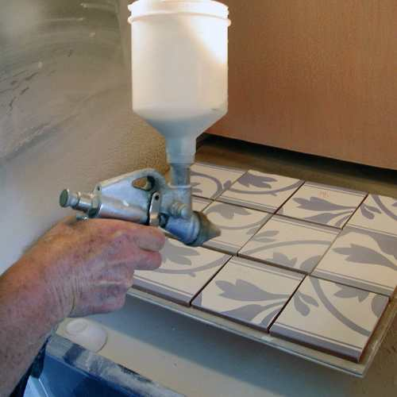
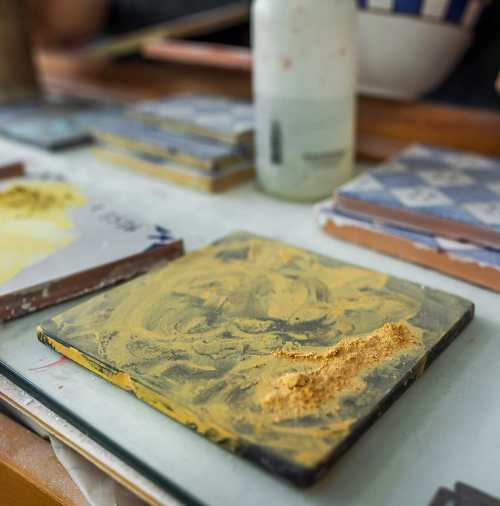
Le motif et sa couleur
Laissez parler le coup de cœur : la plupart des clients arrivent avec une réalisation ou un carreau favori, et l'atelier vous aide à le transposer chez vous.
Les motifs monochromes, traditionnellement bleus, existent dans plus de 30 couleurs. Un motif à trois couleurs ? Vous choisissez les trois.
Professionnels : une faïence qui distingue vos projets
Architectes, décorateurs, graphistes, designers : faites-nous part de vos créations, nous les adaptons à vos murs.
Ce que l'atelier vous apporte
- Un showroom accessible sur rendez-vous, pour vous et vos clients
- Plus de 100 motifs, un nuancier principal de 20 couleurs
- Recherches de couleurs et reproductions pour les restaurations
- Livraison sur chantier ou en agence, en France et en Europe
- Premier échantillon offert
- 2 à 6 semaines de fabrication pour une commande moyenne
- Un interlocuteur unique pour suivre la commande
Des finitions qui font la différence
Les champs émaillés
L'épaisseur du carreau disparaît : plus besoin de baguette dans un autre matériau, ni de peinture à rechampir qui s'encrasse en cuisine.
Frises et listels
Nombreux modèles de frises avec leurs angles, en plusieurs formats ; listels à vos mesures dès 4 cm.
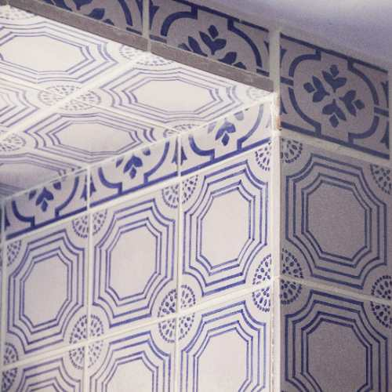
Ils ont travaillé avec l'atelier
« Travailler avec Faïence Ponchon pour tous les carrelages des salles de bain et de la cuisine du Collège royal et militaire de Thiron-Gardais fut un réel plaisir. Les créations originales, réalisées dans les délais, ont donné entière satisfaction à notre client Stéphane Bern. Il a même fait poser pour la postérité les carreaux signés livrés avec chaque motif. »F. Leclerc, architecte d'intérieur
- Collège royal et militaire de Thiron-Gardais, monument historique du XVIIᵉ siècle
- Échantillons d'après les planches de tendances de l'architecte ; carreaux des salles de bain et de la cuisine
« Very nice, happy with the tile with the decoration colors! Very well done! Hope I can place an order again in the near future. »P.O., revendeur spécialisé en carrelage traditionnel
- Hummelo, Pays-Bas : recherche de couleur d'après carreau ancien, carreaux d'une salle de bain
Conseils et questions fréquentes
Ce que l'on nous demande le plus souvent. Une autre question ? Ponchon Conseil ou l'atelier vous répondent.
Comment se passe une commande
- Mesurez la surface à carreler (vous-même ou avec votre carreleur).
- Choisissez motifs, composition, format et couleurs ; l'atelier vous conseille.
- Écrivez à l'atelier : dimensions (10,8 ou 13 cm), quantités par motif, adresses de livraison et de facturation, téléphone.
- Vous recevez le devis par e-mail. Sous 500 € HT : règlement intégral ; au-delà : acompte de 50 %.
- Fabrication en 3 à 6 semaines, puis retrait à la manufacture ou livraison sur rendez-vous ; solde à réception.
À réception, contrôlez la marchandise ; en cas de problème (très rare), signalez-le au transporteur par lettre recommandée et prévenez l'atelier le jour même.
Poser un carrelage artisanal
Une pose traditionnelle s'impose. Laissez 2 à 3 mm de joint pour absorber les petits écarts ; si le motif n'a pas de sens, un quart de tour aide à aligner. Posez sans croisillons, ou placez-les perpendiculairement au mur pour pouvoir les retirer.
Coupez à la scie diamantée, à la mèche ou à la scie cloche. Pour un tapis, un tableau ou un panneau, préparez les carreaux à plat avant la pose. Prévoyez 5 % de carreaux en plus pour les coupes et la casse.
Une fois jointoyée, la surface garde une vibration, une nuance vivante, plutôt qu'un aplat froid.
Composer son décor
Géométrique pour le graphisme et le contraste, floral pour l'authenticité, frise pour rythmer une grande surface ou souligner un évier, tapis pour mettre en valeur une cuisinière ou un fond de cheminée.
Dans une pièce en longueur, soulignez les lignes horizontales du petit côté pour élargir l'espace. Et définissez d'abord votre intention : protéger, faciliter l'entretien, mettre en valeur, dynamiser, respecter votre bâtisse.
Personnaliser
Initiales, prénom, date, symbole : signez l'histoire de votre maison. L'atelier peut aussi fabriquer vos carreaux d'après vos propres dessins, créer une fresque sur plusieurs murs, ou des listels à vos mesures.
Actualités
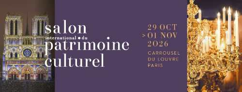
Salon international du patrimoine culturel 2026
Du 29 octobre au 1ᵉʳ novembre 2026 · Carrousel du Louvre, Paris · salle Delorme, stand C53
L'atelier y a présenté en exclusivité son « mur chromatique », le nuancier élargi, et de nouveaux « carreaux imagés » tirés des répertoires rouennais, anversois et italiens.
Vous les avez manqués ? Ils vous attendent au showroom de Ponchon, sur rendez-vous.
Prendre rendez-vous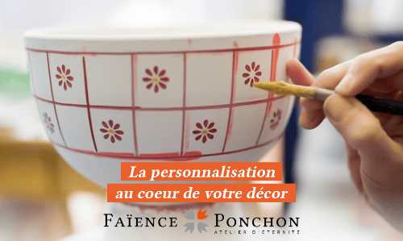
La personnalisation au cœur de votre décor
Initiales, dates, fresques, listels sur mesure.
Lire →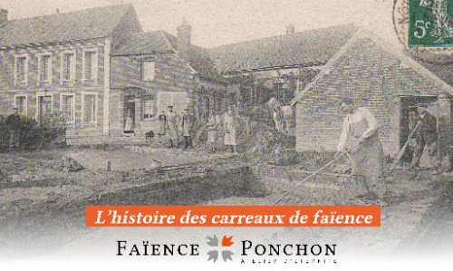
L'histoire des carreaux de faïence
De Faenza à Delft, de Martres-Tolosane à Ponchon.
Lire →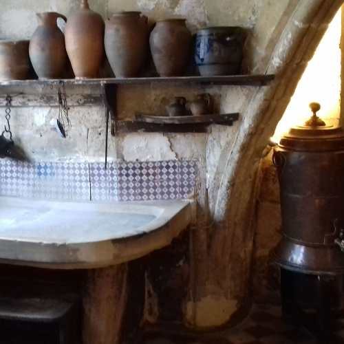
Le label Entreprise du Patrimoine Vivant
Ce qu'il distingue, et comment il s'obtient.
Lire →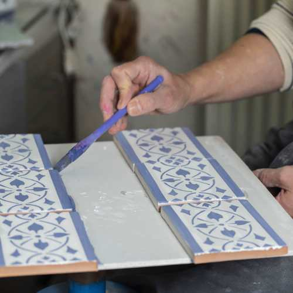
Les caractéristiques du carrelage artisanal
Façonnage, émail, décor, pose.
Lire →Venir à la manufacture, ou nous écrire
À une heure de Paris, deux de Rouen ou de Lille. Venez voir et manipuler les échantillons : l'atelier étudie votre projet avec vous, sur place ou à distance (plans et photos par e-mail).
Horaires du showroom
Ouvert sur rendez-vous.
619 rue de Pierrepont, Hameau de Pierrepont
60430 Ponchon
+33 (0)3 44 08 86 22 · atelier@faience-ponchon.com
Retrait et expédition
Retirez votre commande sur rendez-vous à la manufacture. Ou recevez-la sur palette, en France métropolitaine et en Europe : le transporteur prend rendez-vous avec vous.
Rendez-vous, devis, échantillon
Ma sélection
Vos motifs (pour un devis ou un échantillon) et vos articles de la boutique.
Boutique : règlement par virement ou par chèque, comme aujourd'hui ; le paiement en ligne sécurisé peut être ajouté. Motifs : l'atelier vous envoie un devis.
Mentions légales et conditions de vente
Éditeur
Faïence Ponchon SASU · 619 rue de Pierrepont, Hameau de Pierrepont, 60430 Ponchon · 03 44 08 86 22 · atelier@faience-ponchon.com
Représentante légale et administration du site : C. Sobczak · SIRET 819 175 167 00017 · RM 819 175 167 RM 60 · APE/NAF 23.41Y · RCS Beauvais
Hébergement
1&1 Internet SARL (IONOS), 7 place de la Gare, BP 70109, 57201 Sarreguemines Cedex
Droits d'auteur
Les contenus du site (textes, photos, descriptifs, tarifs) sont donnés à titre indicatif et non contractuels. Toute reproduction est interdite sans autorisation expresse.
Données personnelles
Vos données servent uniquement à répondre à vos demandes, à vous informer ponctuellement des événements de l'atelier et à améliorer le site. Elles ne sont ni cédées ni vendues. Vous disposez d'un droit d'accès et de modification : écrivez à Faïence Ponchon, 619 rue de Pierrepont, 60430 Ponchon. Les e-mails sont conservés un an.
Conditions générales de vente
Les CGV distinguent les ventes aux professionnels et aux particuliers (sur mesure et vente à l'atelier). Un formulaire de rétractation est disponible.